Role
Solo Designer + Builder
Turning a coach's scattered workflow into a scalable coaching platform.
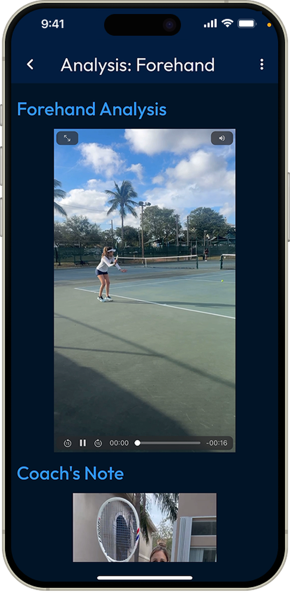
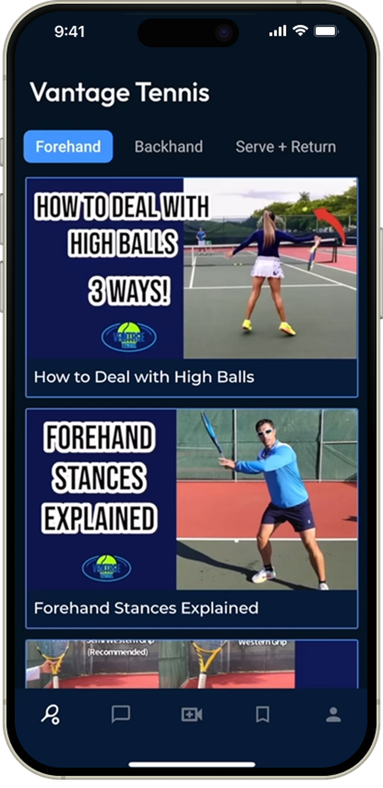
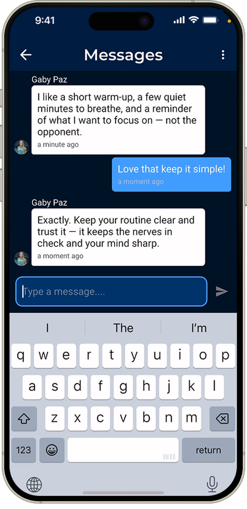
Vantage Tennis started as a favor for my former competitive tennis coach: her best coaching moments were getting lost across Instagram DMs, email threads, and YouTube comments. I built her a single subscription platform where players get premium training content, message her directly, and submit video for personalized analysis.
I designed and built the entire product solo: research, UX/UI, FlutterFlow development, Firebase backend, subscription payments, and launch on both app stores.
Here's how the project actually came together, six stages from early research through a live launch on both app stores.
I ran a series of conversations with my coach to understand her current process end to end. Three things came out of these conversations that shaped the entire product:
Her coaching content already had real premium-level demand, but it wasn't packaged to capture it.
Player questions and requests were scattered across so many different channels that things got overlooked.
Requesting and submitting video for analysis was scattered across tools, and consolidating it into one flow opened the door to ongoing feedback, not just one-off reviews.
I studied Intuitive Tennis, an existing paywalled coaching app, examining its user flows and usability to see where I could differentiate, particularly around direct coach access and structured video feedback.
I've competed since age nine, and brought that firsthand experience of working with a remote coach directly into the design process.
one app for ALL my tennis learning
new premium content, every week
gotta condense this workflow
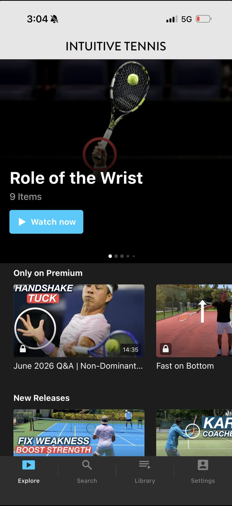
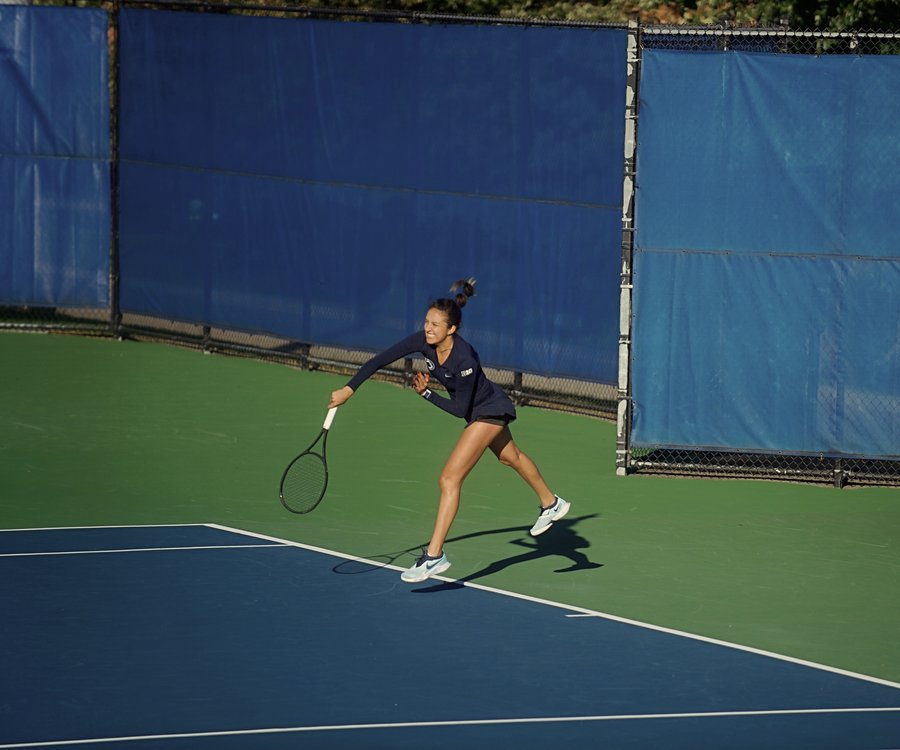
My coach didn't have a product problem so much as a business problem hiding in plain sight. She had real expertise and a growing base of players who wanted access to it, but no way to deliver that expertise at scale.
Coming out of research, three goals defined what the product needed to do:
Connect players anywhere in the world with Vantage Tennis coaches, so they can get personalized tips and guidance no matter their location.
Create a structured way for players to submit video and receive personalized feedback.
Consolidate the coach's workflow, content, messaging, and analysis, into a single platform.
Before opening Figma, I sketched every core screen by hand, working through layout options for the video feed, messaging, and the video analysis flow. Early passes explored a few different approaches: a single scrolling feed versus a categorized one, a lock-icon treatment for gated content versus hiding it outright, and where video analysis submission and status tracking should live in the navigation. Sketching it out first let me test the full navigation structure end to end before committing anything to high-fidelity design.
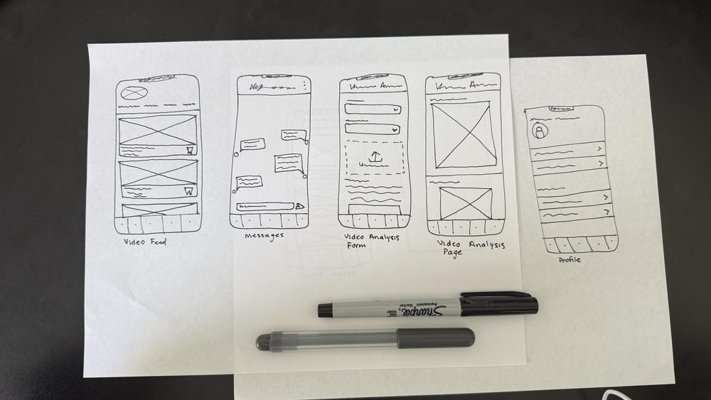
Before opening Figma, I pulled together a small brand foundation from what the coach already had: her existing logo and a five-color palette taken directly from her website and social presence.
Rather than inventing a new visual identity from scratch, the goal was for the app to feel like an obvious extension of a business her players already knew and trusted. These same five colors carried through into every screen of the app, and into this case study itself.
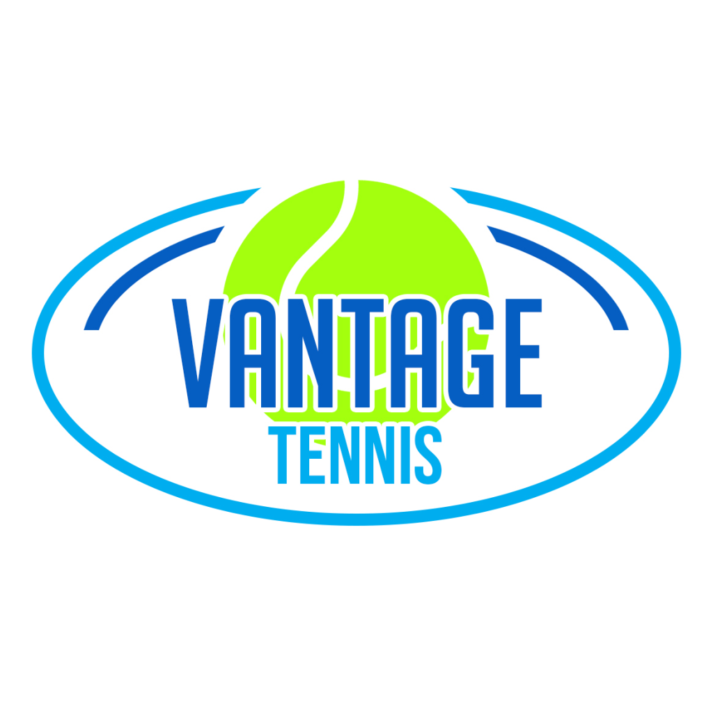
Mapping the full journey, not just the screens. I traced each core flow end-to-end, catching edge cases and error states before writing a line of code. Click any diagram to open it fullscreen.
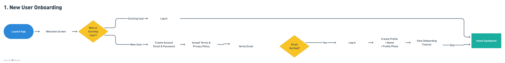
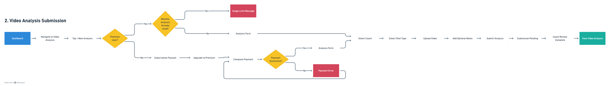
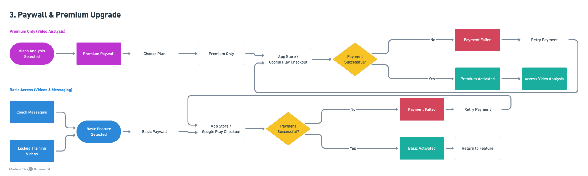
Every core screen started as a hand sketch before I opened Figma. Sketching first let me work through layout and navigation quickly, without getting attached to any particular visual treatment too early. This is genuinely my favorite part of building products: watching a rough sketch turn into something real. Scroll to this section and each sketch will fade into its finished Figma design.
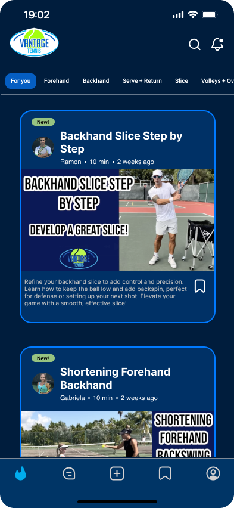
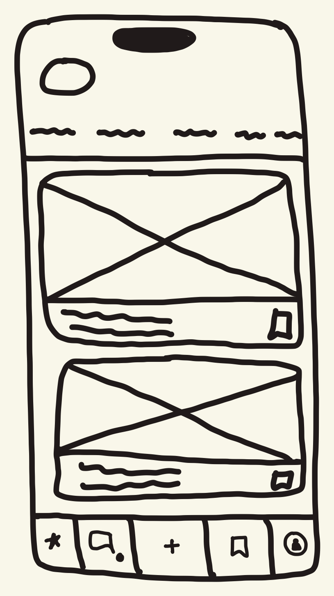
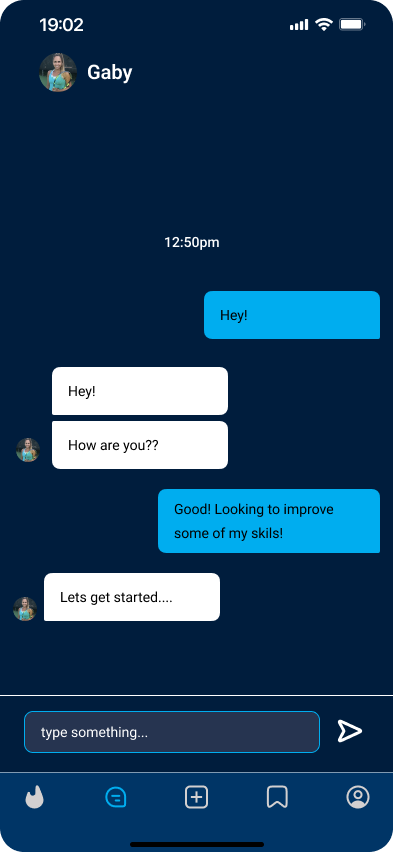
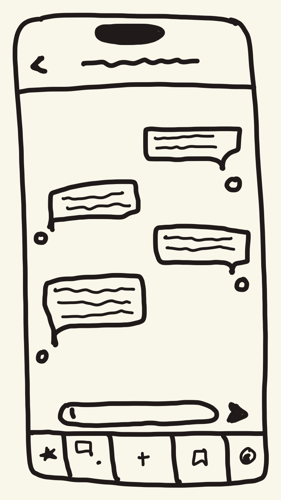
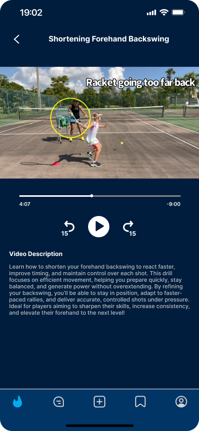
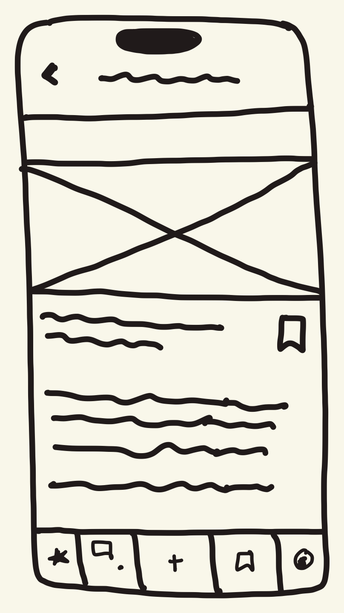
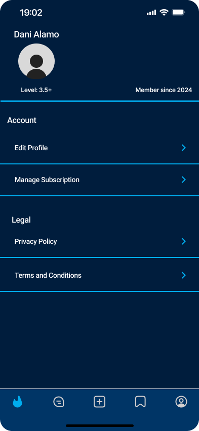
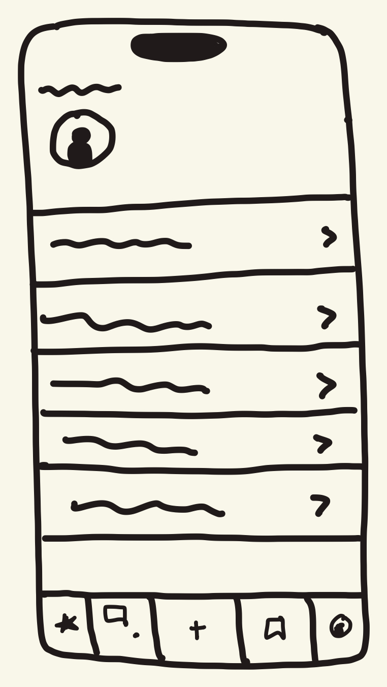
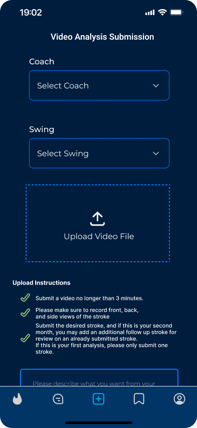
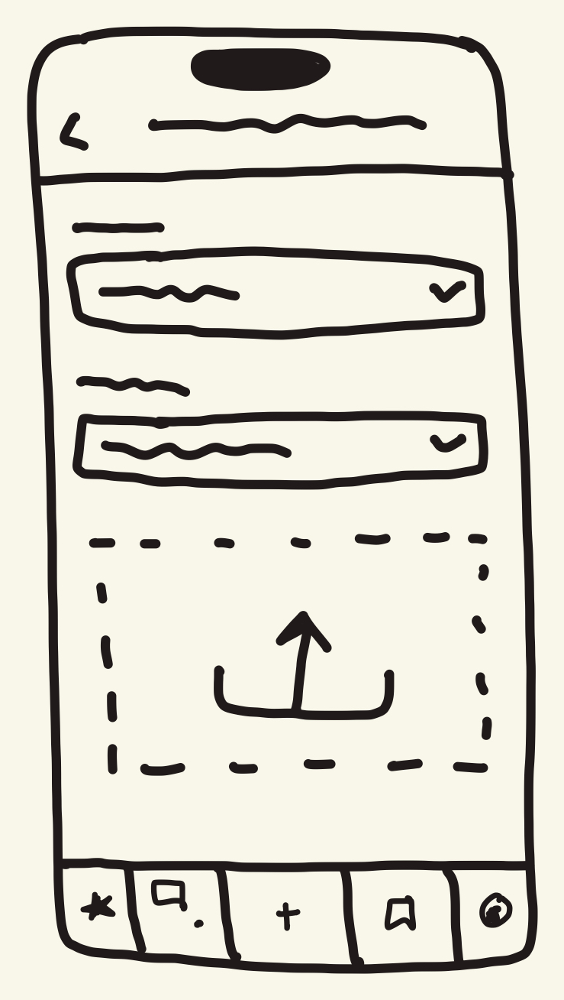
With the designs finalized, I built the entire product myself, integrating three core technologies that worked together to power the full experience for both players and coaches.
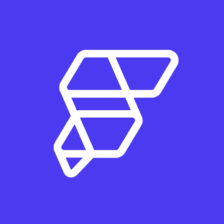
Developed the application's interface, navigation, and interactive features across iOS and Android.
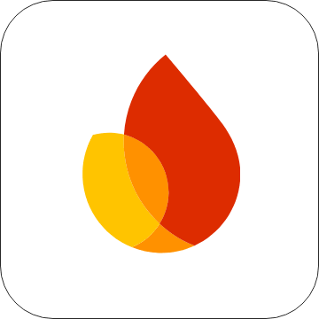
Managed authentication, cloud data, messaging, and application state throughout the app.
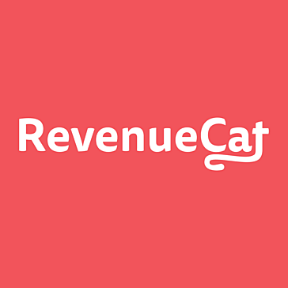
Managed subscriptions and unlocked premium access across the Apple App Store and Google Play.
Before releasing publicly, I tested the app thoroughly using Apple TestFlight for iOS and Google Play testing for Android. In hindsight, this is the one place I'd change my process: testing earlier would have caught issues before they were built into the foundation (more in Challenges & Reflection).
Tested whether players could easily navigate the app, access training content, and understand the available features.
Verified authentication, RevenueCat subscription payments, messaging, and video analysis submission all worked correctly.
Tested app performance and functionality across iOS and Android before submitting for public release.
I implemented the subscription tiers Vantage Tennis provided and submitted the app to both the App Store and Google Play. After a more iterative submission process than expected, Vantage Tennis officially launched on both platforms!
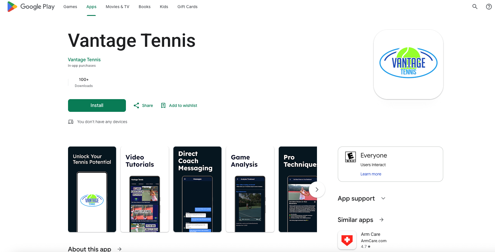
Problem: Her best content sat on YouTube for free, capturing none of its value.
Solution: A tiered feed, three free sample videos, full library for subscribers.
Why it matters: Turned her content library into an actual revenue stream while still proving quality upfront.
Problem: Player questions were scattered across DMs, comments, and email.
Solution: An in-app messaging system for Basic and Premium subscribers.
Why it matters: One inbox for the coach, one clear place for players to ask.
Problem: The most valuable offering ran through email, where submissions got lost.
Solution: A dedicated flow to upload, track status, and receive tailored feedback.
Why it matters: Turned an informal favor into a structured, visible product offering.
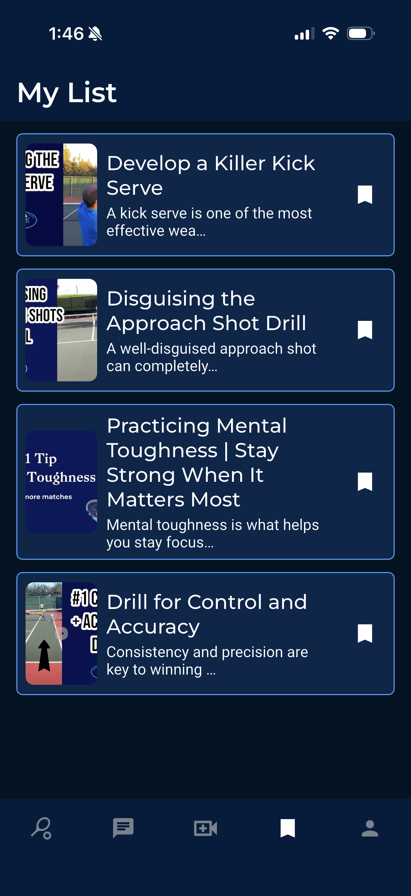
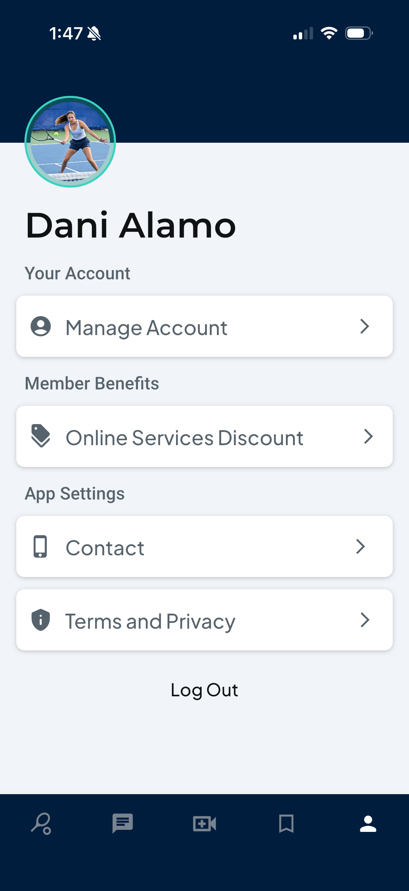
Saved Videos: bookmark training content to revisit anytime.
Profile: manage account, subscription, and settings in one place.
Larger uploads on the coach's end were slow, sometimes failing outright.
Approval took several resubmission rounds, the most unpredictable part of the timeline.
A low-code platform meant working around constraints a custom codebase wouldn't have.
Every role, design to deployment, fell on one person, so I prioritized ruthlessly and leaned into the skills that mattered most for getting it live.
Every planned feature functional end to end, from login through payments to coach-side review, as a single builder.
Tighter stakeholder communication throughout the build, more upfront research into store submission requirements, and usability testing brought in earlier, before the product was fully built.
This project ran the full lifecycle of a real product: idea to requirements, requirements to design, design to a working front end and backend, and a working app to two live store listings with real payments running through it. Designing a feature is one thing. Being responsible for whether it works, ships, and gets paid for is another.